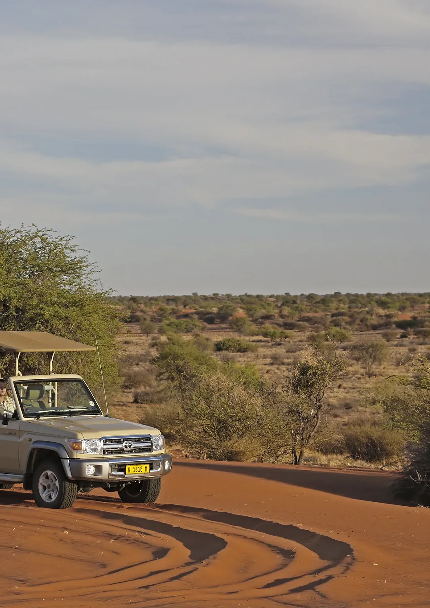
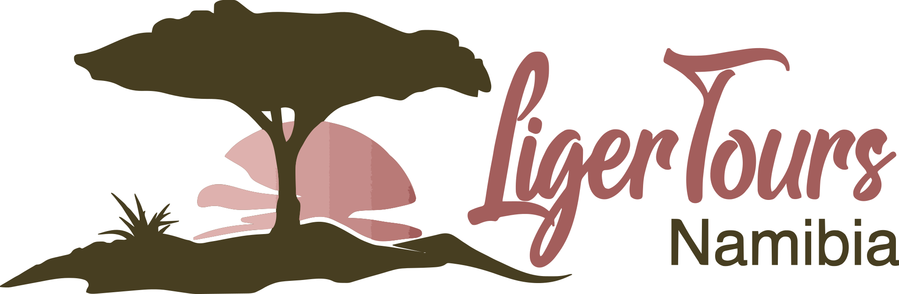
A locally owned Namibian tour operator showing visitors the country’s deserts, coastlines and wildlife, planned around their dates, their pace and their group.
Who we are
Liger Tours Namibia is a locally owned tour company built on genuine local knowledge. From game drives on the doorstep of the capital to multi-day journeys across the country’s deserts, coastlines and wildlife reserves, every route is designed to show travellers the real Namibia, at a pace that lets them actually take it in.
As a company registered with the Namibia Tourism Board, we plan every trip around the people booking it: couples, families, solo travellers and groups of any size, from two people to fifty or more, each with a route, pace and style of travel that suits them.
Mission
To connect travellers with the landscapes, wildlife and people of Namibia while promoting responsible and sustainable tourism.
Vision
To become one of Namibia’s most trusted and inspiring tour companies by delivering exceptional travel experiences that showcase the country’s natural wonders, rich cultures and warm hospitality.
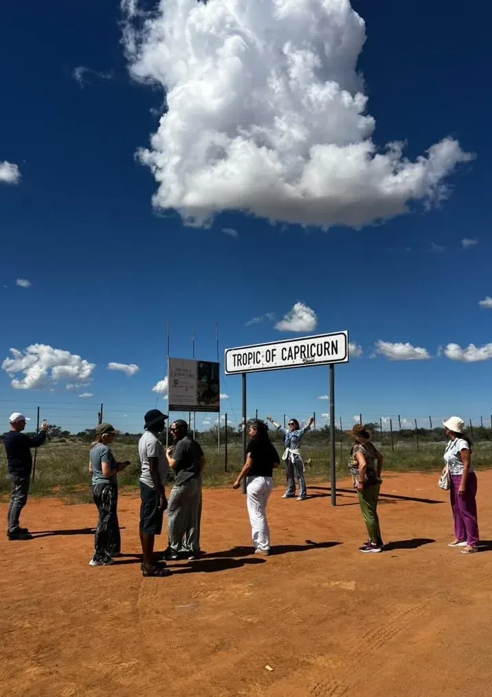
Guests at the Tropic of Capricorn, Namibia
Communication was quick, the planning was smooth, and our holiday exceeded every expectation.
Michael R. · Germany
Core capabilities
7 routes · 13 day experiences
Every route starts and ends in Windhoek: no backtracking, no wasted days. Group guided tours of any size, from two travellers to fifty or more, with the route, pace and vehicles built around each booking.
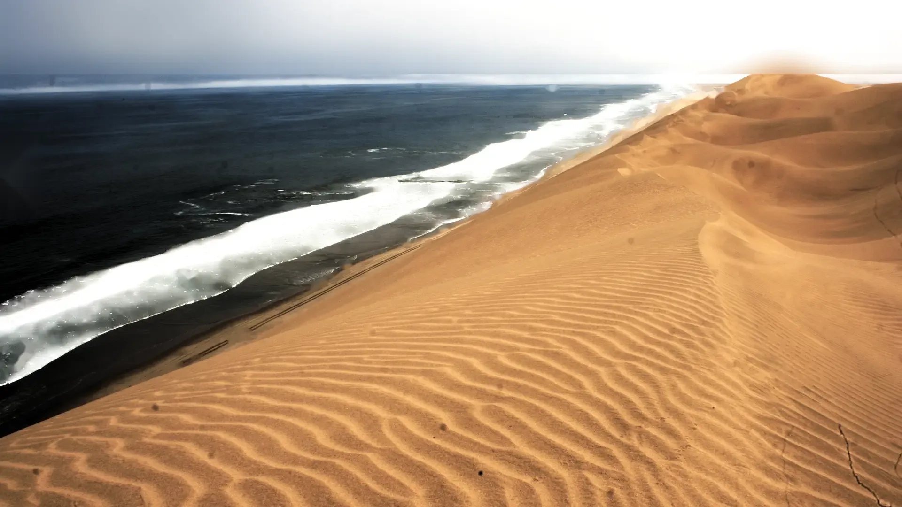
Sandwich Harbour · where the ocean meets the desertThirteen day trips and experiences: game drives, city and township tours, a traditional cooking class, Bushmen walks, a Sandwich Harbour 4x4 route, sundowner bar hopping and more. Book them on their own or add them to any tour; all run with local guides.
How we work
One team handles the whole trip: the route, the driving, the park gates, the lodges and the timing around light and wildlife. Here is how a booking runs.
Step 01 · Enquiry
Send the enquiry form or message us on WhatsApp with your dates, group size and the places you want to see. We reply within one working day.
Step 02 · Quotation
Every tour is quoted individually in N$ because price depends on group size, season and accommodation choices. The quote arrives within one working day, with nothing hidden.
Step 03 · Route building
We build the itinerary around your dates, pace and style of travel, including custom routes shorter or longer than the tours on this site.
Step 04 · Confirmation
A deposit secures the dates, with the balance due before departure as set out in the quotation. Everything is confirmed in writing before you travel.
Step 05 · On the road
A local guide handles the driving, the park gates and the planning. Vehicles are matched to the group size and the route, and maintained for Namibia’s long gravel and sand roads.
Step 06 · Support
From first enquiry to final drop-off, the exact setup for your trip is confirmed before you pay anything, and your guide is with you at every stop.
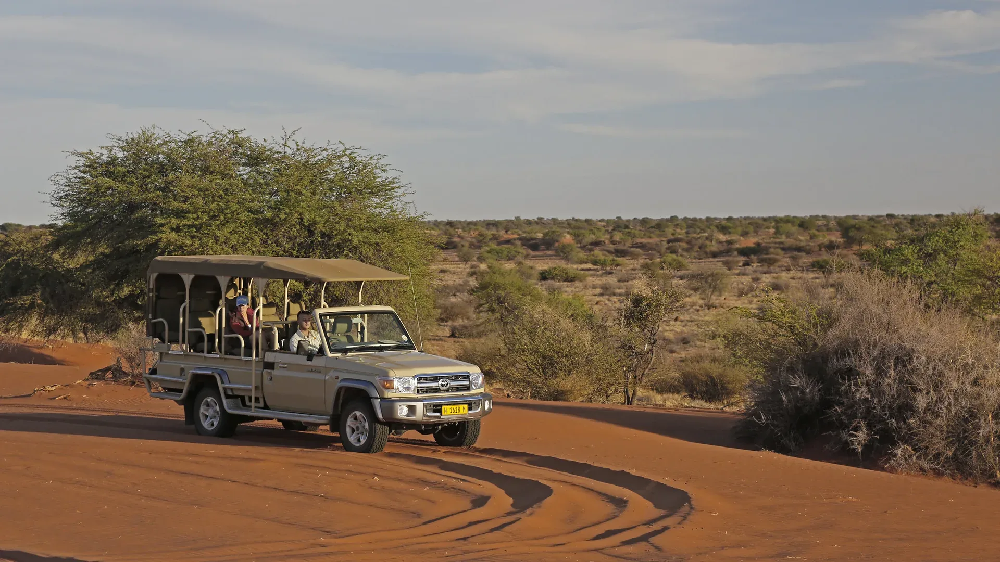
Vehicles matched to the group and the routeAll quotations in Namibian dollars (N$). A deposit secures your dates; the balance is due before departure, as set out in your quotation. Nothing is paid before everything is confirmed in writing.
Track record
Our itinerary was perfectly tailored to our interests. We loved that the team recommended both the iconic attractions and the quiet corners that most tourists miss. The service was professional, friendly and reliable from start to finish.
David and Emma T. · United Kingdom
Our trip to Namibia was spectacular, and Liger Tours Namibia made every moment special. The itinerary was thoughtfully planned, the recommendations were excellent, and everything ran smoothly from beginning to end.
Sophie L. · France
Guest quotes are published with permission on ligertours.com. The routes, lodges and guides behind them are the same ones offered to every enquiry.
Regions covered: Sossusvlei · Swakopmund · Spitzkoppe · Etosha · Waterberg · Kalahari · Fish River Canyon · Damaraland · Owamboland · Brandberg
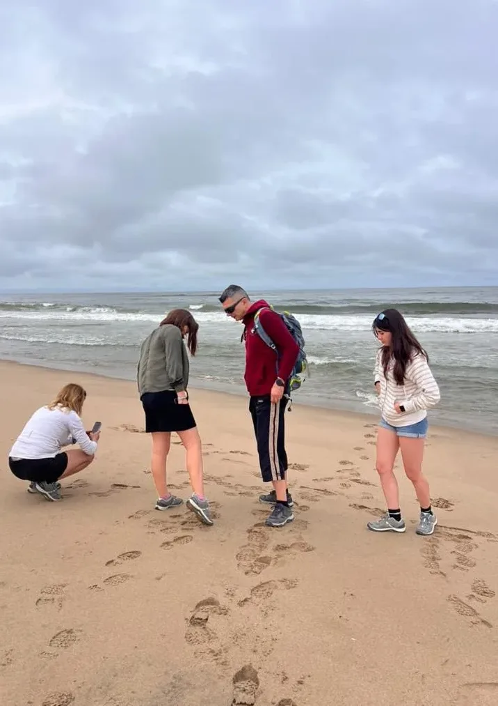
On the coast with guests
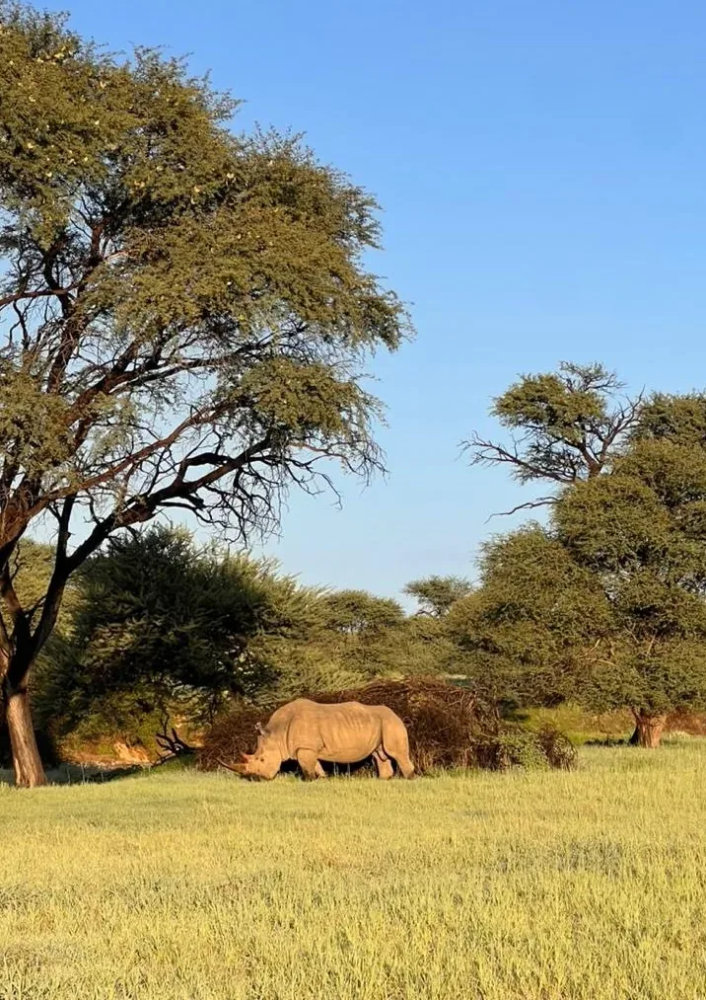
Etosha National Park
Built by people who grew up with this land.
Our promise
Leadership and governance
The company was founded by an Environmental Sciences graduate whose appreciation for nature and sustainable travel shapes every itinerary, from a morning game drive outside the capital to a multi-day journey across the country. Guiding stays in local hands: guides with extensive knowledge of Namibia’s history, wildlife, cultures and the quiet corners most itineraries skip.
Accountability
Liger Tours Namibia is registered with the Namibia Tourism Board (NTB) and held to professional standards at every step of a trip. Registration, insurance requirements and park permits are part of how every route is run, not extras.
How we travel
Every tour showcases the landscapes, wildlife and cultures of Namibia while promoting responsible and sustainable tourism: local guides, genuine cultural encounters arranged with respect, and itineraries that leave the places guests visit as they found them.
Comfort and safety
Comfort and safety are top priorities throughout every journey, in the vehicle and at every stop. Vehicles are matched to the group size and the route, and the exact setup for each trip is confirmed before departure.
Languages and planning
Planning and the website run in five languages: English, German, French, Afrikaans and Portuguese. Every route is guided in English, and enquiries are answered in the language they arrive in wherever possible.
Why Liger Tours
Our guides have extensive knowledge of Namibia’s history, wildlife, cultures and quiet corners that most itineraries skip.
From Bushmen walks and traditional cooking classes to township tours and desert adventures, we focus on genuine cultural encounters.
We tailor our tours to suit couples, families, groups and solo travellers, from first enquiry to final drop-off.
Your comfort and safety are our top priorities throughout every journey, in the vehicle and at every stop.
We are committed to sharing the beauty and uniqueness of our country with visitors from around the world.
Group guided tours of any size, two travellers to fifty or more, with every route guided in English and planning handled in the language of the enquiry wherever possible.
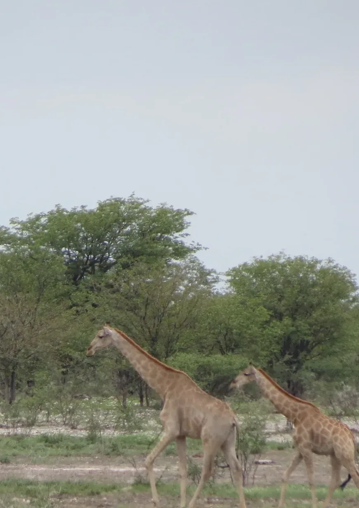
Giraffes on the savanna
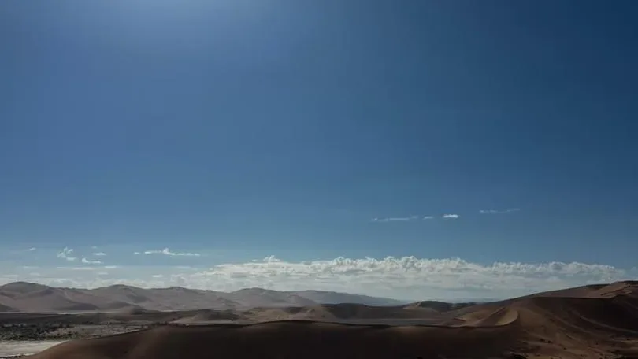
The Namib at first light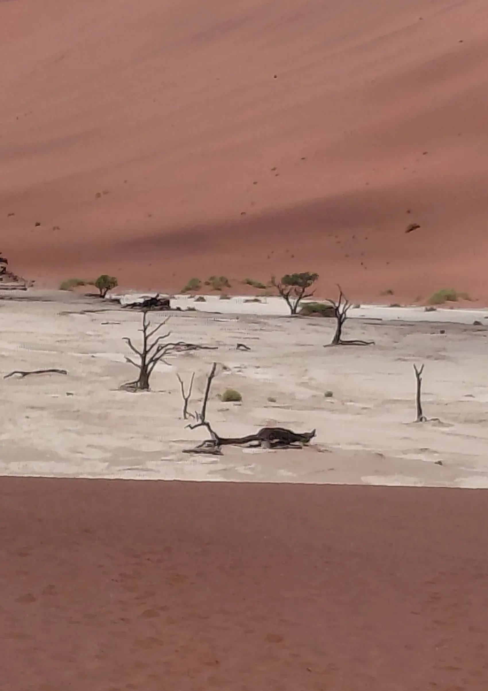
Deadvlei · SossusvleiTalk to us
Phone and WhatsApp
Website
Where we are
Windhoek, Namibia
Office hours
Monday to Saturday, 08:00–17:00 (CAT)
Enquiries answered
Within one working day
Liger Tours Namibia is locally owned and registered with the Namibia Tourism Board (NTB). All quotations are issued in Namibian dollars (N$) and confirmed in writing before any payment is due. Tours depart from and return to Windhoek.
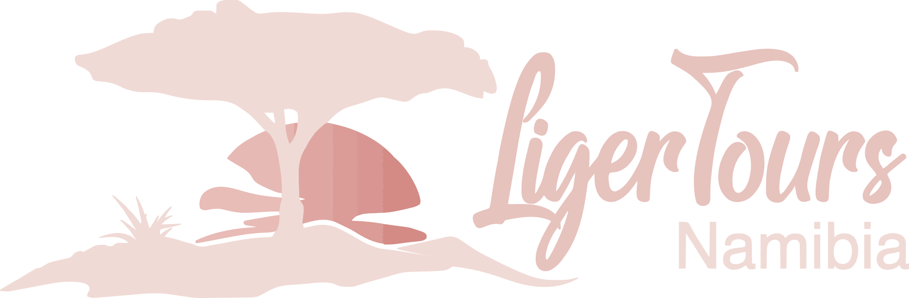
Prepared by Tangison Studio · 2026